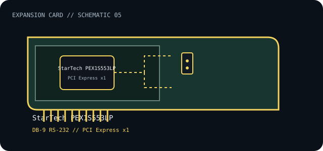

[ INDIVIDUAL COMPONENT // EXPANSION CARDS ]
StarTech PEX1S553LP
Single-port PCI Express RS-232 serial adapter with DB-9 connector and low-profile bracket support. This is a model-specific catalog entry; confirm the exact label and revision before use.

IDENTIFICATION: Match the full model/part number and board revision to the label. Port and bus information below is included only where the linked manufacturer or standards documentation supports it; revisions and platform support may differ.
Specifications and service checks
| Catalog subcategory | Serial-port cards |
|---|---|
| Exact model / part identifier | PEX1S553LP |
| Bus / host interface | PCI Express x1 |
| Verified interfaces / protocols | One DB-9 RS-232 port; 16550 UART; manufacturer lists data rates up to 460.8 Kbps. |
| OS / driver / firmware caveat | StarTech support material lists Windows, Linux, and macOS releases by driver package; check the exact supported OS version before deployment. Full-height/low-profile fit depends on the installed bracket and chassis. |
| Service note | Verify the PEX1S553LP label and bracket. Check serial pinout and any pin-9 power setting before connecting legacy equipment; avoid treating RS-232 as RS-422/485. |
Installation and archival notes
- Record the board model, revision, serial/date code, firmware, bracket, accessories, and the documentation revision used to identify the unit.
- Confirm the host slot's electrical wiring/keying, required power, supported OS/driver, and any platform or option-ROM restriction in the cited model documentation.
- Use ESD precautions. Do not infer pinout, compatibility, protocol, boot support, or revision equivalence from a similar connector or product-family name.
Verify the PEX1S553LP label and bracket. Check serial pinout and any pin-9 power setting before connecting legacy equipment; avoid treating RS-232 as RS-422/485.
Model-specific sources
- StarTech.com — PEX1S553LP product and specificationsExact product identity, PCIe/DB-9 interface and supported serial feature list.
- StarTech.com — PEX1S553LP user manual (Farnell-hosted manufacturer datasheet)Product-specific installation, UART and OS/driver notes.
Source links are selected for this exact model or its manufacturer-documented family. Review the source revision and your card's printed identifiers before service.